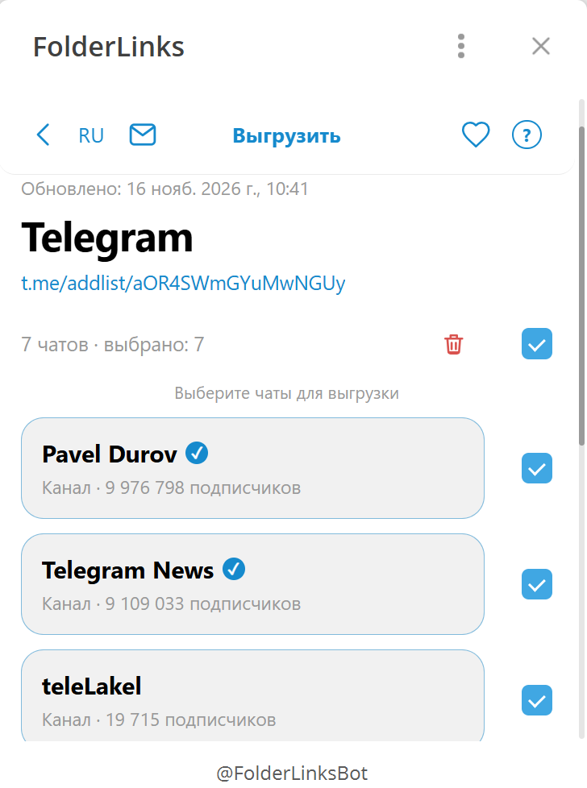
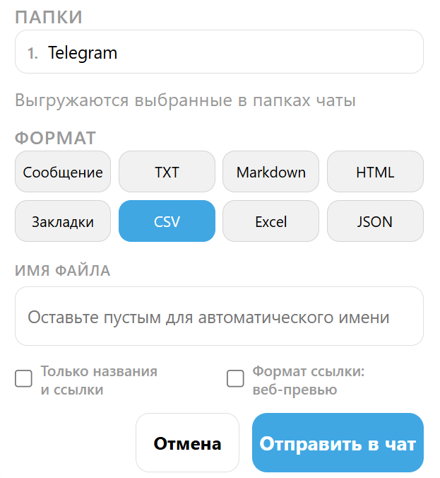

Сохраните ссылки на каналы и группы из своего аккаунта Telegram
FolderLinks мгновенно и бесплатно превращает ссылку на Telegram-папку в подробный список каналов и групп.
Получите результат сообщением в Telegram или выгрузите его в Excel, HTML, JSON и других форматах.
Как это работает
Скопируйте ссылку на папку
В Telegram выберите существующую папку или создайте новую с нужными каналами и группами. Создайте ссылку на неё вида https://t.me/addlist/... Или используйте ссылку на чужую публичную папку.
Отправьте ссылку в FolderLinks
Бот пришлёт название папки и ссылки на каналы и группы. В приложении можно просмотреть список и выбрать, что выгрузить.
Выберите формат выгрузки
Получите результат сообщением, таблицей, текстовым файлом или браузерными закладками. Несколько папок можно объединить в один файл.
Возвращайтесь к сохранённому результату
Папка сохранится в FolderLinks: её можно открыть и выгрузить снова. Исходная ссылка больше не нужна.

Для чего пригодится
Сохранить список каналов и групп
Создайте резервную копию списка своих подписок. Сохраняйте и изучайте публичные Telegram-папки, не добавляя их в свой аккаунт.
Подготовить подборку или каталог
Получите готовые гиперссылки для публикаций, рекомендаций, справочников и рабочих документов. Останется добавить свои описания.
Собрать источники для дальнейшей обработки
Выгрузите список каналов для скриптов, парсинга и ИИ-агентов. Для каналов можно выбрать ссылки на веб-превью вида https://t.me/s/username.
Что можно выгрузить
- Названия каналов и групп.
- Ссылки вида
https://t.me/username. - Количество подписчиков или участников.
- Метки Telegram: верификация, скам, фейк.
- Ссылки на веб-превью каналов вида
https://t.me/s/username. - Несколько папок в одном файле.
Форматы

Безопасность
FolderLinks не просит доступа к вашему Telegram-аккаунту и прав администратора.
Не подписывает вас на каналы и группы, не вступает в них сам и не читает публикации. Не отслеживает изменения по присланным ссылкам.
Частые вопросы
Можно ли выгрузить все свои каналы и группы?
Можно ли сохранить сообщения и фотографии?
Что произойдёт с частными каналами и группами?
Можно ли выгрузить содержимое чужой публичной папки?
Обновляются ли список и количество подписчиков автоматически?
Можно ли повторно выгрузить папку, если ссылка на неё удалена?
Можно ли объединить несколько папок в один файл?
Чем обычные ссылки отличаются от ссылок на веб-превью?
https://t.me/username ведёт на канал или группу внутри Telegram. Ссылка вида https://t.me/s/username – на превью канала в браузере, где его можно смотреть без аккаунта и приложения. Для групп такая возможность не предусмотрена.